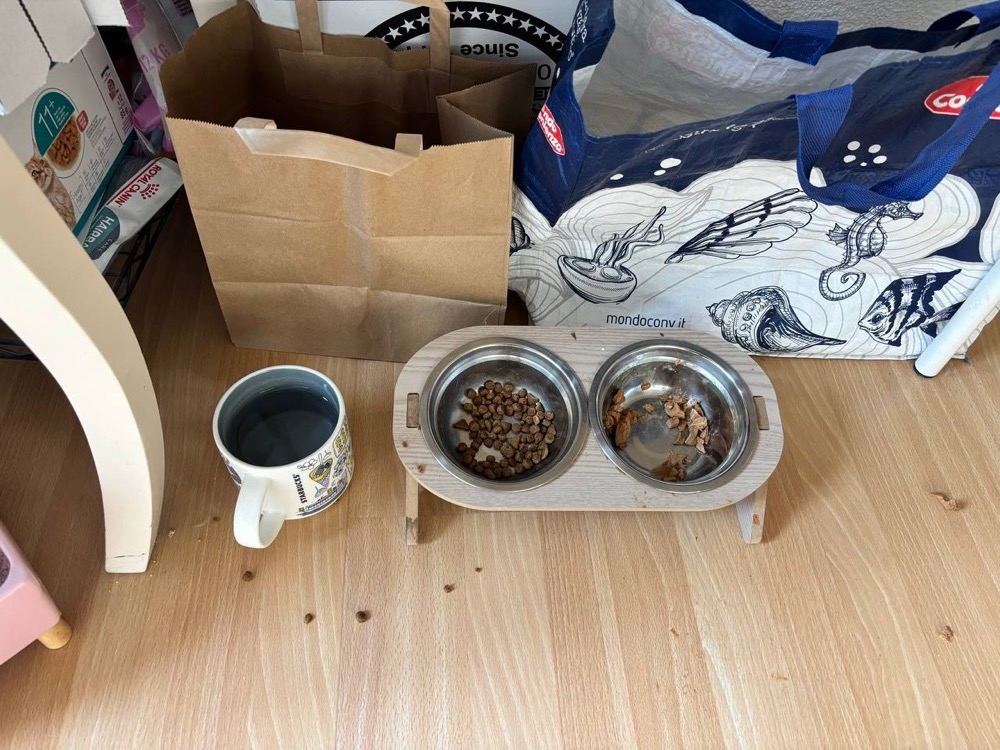
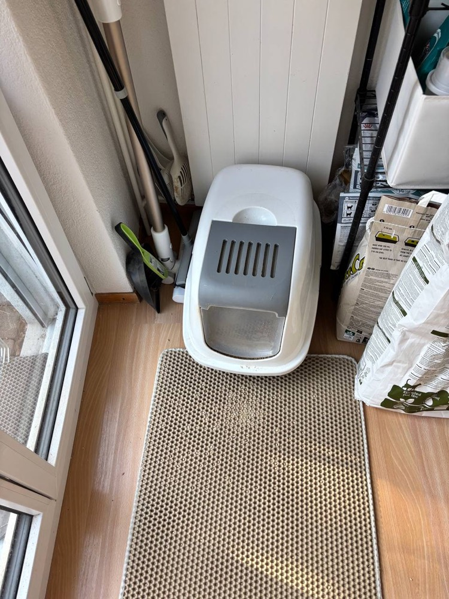
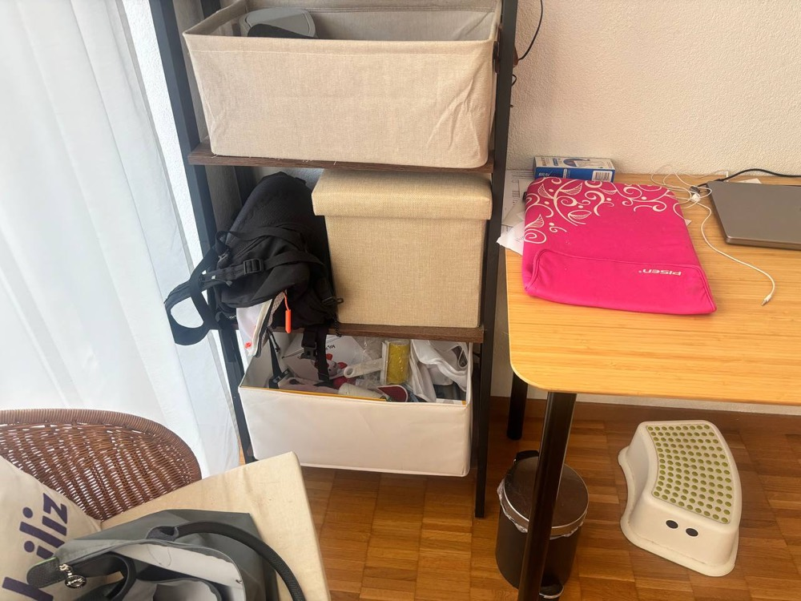

Step by step详细步骤

Water水
Dry干粮
Wet湿粮
Food bowls食盆
Food & water食物和水
- Left bowl = dry food. Always fill it full.
- 左边 = 干粮。每次都要加满。
- Right bowl = wet food. 1 bag each visit.
- 右边 = 湿粮。每次一包。
- Water mug: pour out the old water, rinse, and refill with fresh water.
- 水杯：倒掉旧水，冲洗一下，再装满新鲜的水。
Kitchen rack · 2nd shelf厨房架子 · 第 2 层
Wet food湿粮
- The wet food bags are in this storage box.
- 湿粮包放在这个收纳箱里。
- Give 1 bag each visit, in the right bowl.
- 每次给一包，放进右边的碗。
Kitchen rack · 3rd shelf厨房架子 · 第 3 层
Dry food干粮
- The dry food is on this shelf.
- 干粮放在这一层。
- Refill the left bowl and make sure it is full.
- 给左边的碗补粮，一定要加满。

Scoop铲子
Litter猫砂
Litter box猫砂盆
Clean the litter box清理猫砂盆
- Use the biggest white scoop.
- 用最大的白色铲子。
- Scoop the clumps into a litter bag (see below).
- 把结块铲进垃圾袋（见下方）。
- Always top up with some new litter from the bag on the right.
- 每次都从右边的袋子里补充一些新猫砂。
Kitchen · drawer under the counter厨房 · 台面下的抽屉
Litter bags猫砂垃圾袋
- The bags for litter are the purple and green rolls in this drawer.
- 装猫砂的袋子是抽屉里紫色和绿色的那几卷。
Litter bin猫砂垃圾桶
Throw the litter away扔掉猫砂
- Tie the bag and put it in this silver bin.
- 把袋子系好，扔进这个银色垃圾桶。
- All the used litter goes here.
- 用过的猫砂都扔在这里。

Toys + roller玩具 + 粘毛器
Living room / bedroom · lowest box on the shelf客厅 / 卧室 · 架子最下面的盒子
Toys & lint roller玩具和粘毛器
- All the cat toys are in the lowest white box.
- 所有猫玩具都在最下面的白色盒子里。
- The lint roller for cat hair on your clothes is there too.
- 清理衣服上猫毛的粘毛器也在里面。